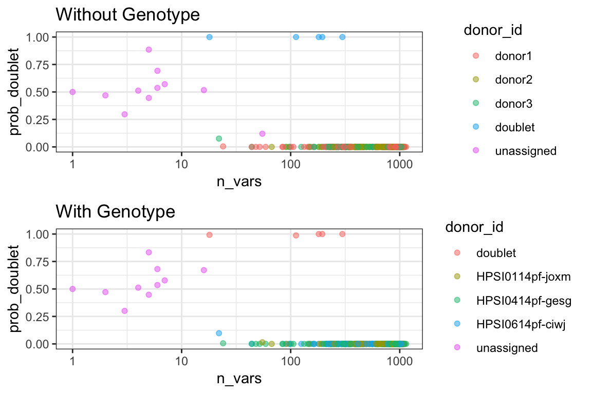

Using Vireo to demultiplex pooled scRNA-seq
Last updated: 2019-01-17
workflowr checks: (Click a bullet for more information)-
✖ R Markdown file: uncommitted changes
The R Markdown file has unstaged changes. To know which version of the R Markdown file created these results, you’ll want to first commit it to the Git repo. If you’re still working on the analysis, you can ignore this warning. When you’re finished, you can runwflow_publishto commit the R Markdown file and build the HTML. -
✔ Environment: empty
Great job! The global environment was empty. Objects defined in the global environment can affect the analysis in your R Markdown file in unknown ways. For reproduciblity it’s best to always run the code in an empty environment.
-
✔ Seed:
set.seed(20181222)The command
set.seed(20181222)was run prior to running the code in the R Markdown file. Setting a seed ensures that any results that rely on randomness, e.g. subsampling or permutations, are reproducible. -
✔ Session information: recorded
Great job! Recording the operating system, R version, and package versions is critical for reproducibility.
-
Great! You are using Git for version control. Tracking code development and connecting the code version to the results is critical for reproducibility. The version displayed above was the version of the Git repository at the time these results were generated.✔ Repository version: 9c547b0
Note that you need to be careful to ensure that all relevant files for the analysis have been committed to Git prior to generating the results (you can usewflow_publishorwflow_git_commit). workflowr only checks the R Markdown file, but you know if there are other scripts or data files that it depends on. Below is the status of the Git repository when the results were generated:
Note that any generated files, e.g. HTML, png, CSS, etc., are not included in this status report because it is ok for generated content to have uncommitted changes.Ignored files: Ignored: .DS_Store Ignored: .Rhistory Ignored: .Rproj.user/ Ignored: data/.DS_Store Ignored: docs/.DS_Store Untracked files: Untracked: analysis/simulation.Rmd Untracked: data/GT_val.genome1K.donors20.rds Untracked: data/demux.ctrl.AnD.gm1K.rds Untracked: data/simu.geneASE.example.rds Unstaged changes: Modified: README.md Modified: analysis/_site.yml Modified: analysis/about.Rmd Modified: analysis/examples.Rmd Modified: analysis/index.Rmd
Expand here to see past versions:
In this totorial, we will use the buid-in data set in cardelino package to show how to use Viroe to demultiplex pooled scRNA-seq data without or with (part) genotype reference data.
First, let us load some basic functions and set the environment.
Demultiplexing without genotype reference
In many biomedical studies, biological replications are important to eliminate unwanted variations, e.g., genetic variations, and often the genetic variation is not the main focus, and genotype reference is probably not available.
For Vireo, known genotype reference is not necessary to enjoy the benefits of multiplexed scRNA-seq. The only requirement is a cell VCF file and the number of pooled donors (actually Vireo can detect the latter automatically).
- cell VCF file: a variant call format (VCF) file from which we can extract the variant x cell matrices of integer count of the number of reads supporting the alternative allele for each variant in each cell and the total number of reads overlapping each variant in each cell. This file can be piled up from bam file on a list of common SNPs by the multifaceted
bcftoolsor our tailored designedcellSNP, Python package based on pysam.
Here, we demonstrate the use of Vireo to assign 384 cells to 3 donors by 2,171 SNPs, which can be loaded from cardelino package directly, via a function load_cellSNP_vcf based on vcfR package.
library(cardelino)
cell_vcf_file <- system.file("extdata", "cells.donorid.vcf.gz",
package = "cardelino")
cell_data <- load_cellSNP_vcf(cell_vcf_file,
max_other_allele = NULL,
min_count = 0, min_MAF = 0)Scanning file to determine attributes.
File attributes:
meta lines: 426
header_line: 427
variant count: 2171
column count: 393
Meta line 426 read in.
All meta lines processed.
gt matrix initialized.
Character matrix gt created.
Character matrix gt rows: 2171
Character matrix gt cols: 393
skip: 0
nrows: 2171
row_num: 0
Processed variant 1000
Processed variant 2000
Processed variant: 2171
All variants processed
[1] "2171 out of 2171 SNPs passed."summary(cell_data) Length Class Mode
A 833664 dgCMatrix S4
D 833664 dgCMatrix S4 In this particular example with reasonable small size and proper coverage, we can run probabilistic principal component analysis (PPCA) on the raw minor allele frequency and can get a feel for the grouping of cells by donor. Note, this takes much longer time for bigger size, e.g., 10,000 cells.
AF_tmp <- cell_data$A / cell_data$D
pp <- pcaMethods::ppca(t(as.matrix(AF_tmp)))
df <- data.frame(PPCA1 <- pp@scores[, 1], PPCA2 <- pp@scores[, 2])
ggplot(df, aes(PPCA1, PPCA2)) +
geom_point(alpha = 0.5) + theme_bw()
Expand here to see past versions of ppca-raw-1.png:
| Version | Author | Date |
|---|---|---|
| 9c547b0 | huangyh09 | 2018-12-22 |
Here, there are 3 donors, hence we set n_donor=3. If this value is unknown, a list of numbers can be tried, e.g., 2 to 10, and usually the genuine n_donor will peak out by achieving highest lower bound. Addition, check_doublet = TRUE is used by default, however can be turned off if doublet detection is not needed. The vireo function returns a list of outputs, one of which is the assigned data.frame with inferred donor ID (either a donor ID, “doublet” or “unassigned”).
ids <- vireo(cell_data = cell_data, n_donor = 3)RUN1: 4 random initializations...
[,1] [,2] [,3] [,4]
n_iter 21.0 21.0 21.0 21
LBound -458524.7 -457406.5 -454108.3 -456435
RUN1: Search in 5 donors. Estimated sizes:
donor4 donor1 donor2 donor5 donor3
[1,] 129.4 121.2 91.4 12.7 10.7
RUN2: Tuning the largest 3 donors with genotype prior estimated from RUN1.
Finished in 5.42 sec.table(ids$assigned$donor_id)
donor1 donor2 donor3 doublet unassigned
128 149 91 5 11 When we map our donor ID back onto the PPCA plot we see that the clusters evident originally indeed correspond to the individual donors. Here, PPCA component 1 clearly separates the donors, while PPCA component 2 appears to reflect coverage of variants (unassigned cells with low coverage appear at low values in PPCA2).
df$donor_id <- ids$assigned$donor_id
ggplot(df, aes(PPCA1, PPCA2, colour = donor_id)) +
geom_point(alpha = 0.5) + theme_bw()Expand here to see past versions of ppca-ids-1.png:
| Version | Author | Date |
|---|---|---|
| 9c547b0 | huangyh09 | 2018-12-22 |
Demultiplexing with genotype reference
In some other case, the genetic variation is indeed the focus of the study and the genotype reference is often available already, even for part of the samples. That is, donors have been genotyped using a SNP chip platform, exome sequencing or similar. In such cases, we recommend to use the available genotype reference, for which a donor VCF file.
- donor VCF file: a VCF file containing genotypes for each of the multiplexed donors.
Now we load the donor VCF file load_GT_vcf from cardelino package based on vcfR package again. Note, the variants needed be matched between cell and donor data before sent to vireo, which can be achieved as follows.
donor_GT <- load_GT_vcf(system.file("extdata", "donors.donorid.vcf.gz",
package = "cardelino"))Scanning file to determine attributes.
File attributes:
meta lines: 68
header_line: 69
variant count: 5524
column count: 12
Meta line 68 read in.
All meta lines processed.
gt matrix initialized.
Character matrix gt created.
Character matrix gt rows: 5524
Character matrix gt cols: 12
skip: 0
nrows: 5524
row_num: 0
Processed variant 1000
Processed variant 2000
Processed variant 3000
Processed variant 4000
Processed variant 5000
Processed variant: 5524
All variants processedrow.names(donor_GT) <- paste0("chr", row.names(donor_GT)) #not always necessary
head(donor_GT) HPSI0614pf-ciwj HPSI0414pf-gesg HPSI0114pf-joxm
chr1_881627_G_A 2 1 2
chr1_1309405_T_C 0 1 0
chr1_1425700_T_C 0 1 1
chr1_1430985_C_T 0 1 0
chr1_1684472_C_T 2 1 0
chr1_1734970_C_T 0 0 1cell_data_mm <- list()
mm <- match(row.names(cell_data$D), row.names(donor_GT))
cell_data_mm$D <- cell_data$D[!is.na(mm), ]
cell_data_mm$A <- cell_data$A[!is.na(mm), ]
Geno_data <- donor_GT[mm[!is.na(mm)], ]
t(dim(cell_data_mm$D)) [,1] [,2]
[1,] 2171 384Now, we can run vireo again but with known genotype this time. Should the genotype is only for a subset of the input donors, please provide n_donor the true number of donors.
ids_GT <- vireo(cell_data = cell_data_mm, donor_data = Geno_data)RUN1: 2 random initializations...
[,1] [,2]
n_iter 21.0 21.0
LBound -520635.5 -520635.5
Finished in 1.69 sec.table(ids_GT$assigned$donor_id)
doublet HPSI0114pf-joxm HPSI0414pf-gesg HPSI0614pf-ciwj
5 129 149 91
unassigned
10 df$donor_id_GT <- ids_GT$assigned$donor_id
ggplot(df, aes(PPCA1, PPCA2, colour = donor_id_GT)) +
geom_point(alpha = 0.5) + theme_bw()
Expand here to see past versions of vireo with GT-1.png:
| Version | Author | Date |
|---|---|---|
| 9c547b0 | huangyh09 | 2018-12-22 |
Glimpse of output and quick comparison
The assigned data.frame contains the key information from the donor assignment, including the highest posterior probability value across the donors (prob_max), the posterior doublet probability (prob_doublet) and the number of variants with non-zero read coverage for the cell (n_vars). By default, if n_vars is less than 10, we expect that donor ID is unlikely to be accurate and return donor ID as “unassigned” for these cells. This threshold can be adjusted with the n_vars_threshold argument.
head(ids$assigned) cell donor_id prob_max prob_doublet n_vars
1 22259_2#100 donor3 1 0.000000e+00 850
2 22259_2#101 donor1 1 0.000000e+00 884
3 22259_2#102 donor1 1 0.000000e+00 901
4 22259_2#10 donor2 1 0.000000e+00 757
5 22259_2#103 donor2 1 1.669200e-289 431
6 22259_2#104 donor3 1 2.089039e-204 125We can see that doublets tend to be inferred for “cells” with fewer variants with coverage (that is for cells with less donor information). In this case, reassuringly, the inferred doublets include known “minibulk” wells (10 cells from multiple donors processed as one “cell”) and positive control wells (details not shown).
fig_part1 <- ggplot(ids$assigned, aes(n_vars, prob_doublet, colour = donor_id)) +
geom_point(alpha = 0.5) + scale_x_log10() +
ggtitle("Without Genotype") + theme_bw()
fig_part2 <- ggplot(ids_GT$assigned, aes(n_vars, prob_doublet, colour = donor_id)) +
geom_point(alpha = 0.5) + scale_x_log10() +
ggtitle("With Genotype") + theme_bw()
ggpubr::ggarrange(fig_part1, fig_part2, nrow = 2, align = "v")
Expand here to see past versions of plot-doublet-1.png:
| Version | Author | Date |
|---|---|---|
| 9c547b0 | huangyh09 | 2018-12-22 |
For most cells, the vireo model is very confident about donor assignment (posterior probability of 1 for best-matching donor). Once there are more than about 30 variants with read coverage we can assign cells to donors with very high confidence.
fig_part1 <- ggplot(ids$assigned, aes(n_vars, prob_max, colour = donor_id)) +
geom_point(alpha = 0.5) + scale_x_log10() +
ggtitle("Without Genotype") + theme_bw()
fig_part2 <- ggplot(ids_GT$assigned, aes(n_vars, prob_max, colour = donor_id)) +
geom_point(alpha = 0.5) + scale_x_log10() +
ggtitle("With Genotype") + theme_bw()
ggpubr::ggarrange(fig_part1, fig_part2, nrow = 2, align = "v")Expand here to see past versions of plot-postprob-1.png:
| Version | Author | Date |
|---|---|---|
| 9c547b0 | huangyh09 | 2018-12-22 |
With donor identity now inferred for these cells, the donor identities can be linked back to the expression profiles for the cells for downstream analysis.
Session information
sessionInfo()R version 3.5.2 (2018-12-20)
Platform: x86_64-apple-darwin15.6.0 (64-bit)
Running under: macOS Mojave 10.14.2
Matrix products: default
BLAS: /Library/Frameworks/R.framework/Versions/3.5/Resources/lib/libRblas.0.dylib
LAPACK: /Library/Frameworks/R.framework/Versions/3.5/Resources/lib/libRlapack.dylib
locale:
[1] en_GB.UTF-8/en_GB.UTF-8/en_GB.UTF-8/C/en_GB.UTF-8/en_GB.UTF-8
attached base packages:
[1] stats graphics grDevices utils datasets methods base
other attached packages:
[1] cardelino_0.2.6 BiocStyle_2.8.2 ggpubr_0.1.7 magrittr_1.5
[5] ggplot2_3.1.0 knitr_1.20
loaded via a namespace (and not attached):
[1] nlme_3.1-137 bitops_1.0-6
[3] matrixStats_0.54.0 ggtree_1.12.7
[5] bit64_0.9-7 RColorBrewer_1.1-2
[7] progress_1.2.0 httr_1.3.1
[9] rprojroot_1.3-2 GenomeInfoDb_1.16.0
[11] tools_3.5.2 backports_1.1.2
[13] R6_2.3.0 vegan_2.5-2
[15] mgcv_1.8-26 DBI_1.0.0
[17] lazyeval_0.2.1 BiocGenerics_0.26.0
[19] colorspace_1.3-2 permute_0.9-4
[21] withr_2.1.2 tidyselect_0.2.5
[23] prettyunits_1.0.2 bit_1.1-14
[25] compiler_3.5.2 git2r_0.23.0
[27] Biobase_2.40.0 DelayedArray_0.6.5
[29] labeling_0.3 rtracklayer_1.40.4
[31] scales_1.0.0 stringr_1.3.1
[33] digest_0.6.18 Rsamtools_1.32.2
[35] rmarkdown_1.10 R.utils_2.7.0
[37] XVector_0.20.0 pkgconfig_2.0.2
[39] htmltools_0.3.6 BSgenome_1.48.0
[41] rlang_0.3.1 RSQLite_2.1.1
[43] bindr_0.1.1 jsonlite_1.6
[45] BiocParallel_1.14.2 dplyr_0.7.8
[47] R.oo_1.22.0 VariantAnnotation_1.26.1
[49] RCurl_1.95-4.11 GenomeInfoDbData_1.1.0
[51] Matrix_1.2-15 Rcpp_1.0.0
[53] munsell_0.5.0 S4Vectors_0.18.3
[55] ape_5.1 R.methodsS3_1.7.1
[57] stringi_1.2.4 whisker_0.3-2
[59] yaml_2.2.0 MASS_7.3-51.1
[61] SummarizedExperiment_1.10.1 zlibbioc_1.26.0
[63] plyr_1.8.4 pinfsc50_1.1.0
[65] grid_3.5.2 blob_1.1.1
[67] parallel_3.5.2 snpStats_1.30.0
[69] crayon_1.3.4 lattice_0.20-38
[71] cowplot_0.9.4 Biostrings_2.48.0
[73] splines_3.5.2 GenomicFeatures_1.32.2
[75] hms_0.4.2 pillar_1.3.1
[77] GenomicRanges_1.32.7 biomaRt_2.36.1
[79] stats4_3.5.2 vcfR_1.8.0
[81] XML_3.98-1.15 glue_1.3.0
[83] evaluate_0.11 pcaMethods_1.73.0
[85] memuse_4.0-0 treeio_1.4.3
[87] gtable_0.2.0 purrr_0.2.5
[89] tidyr_0.8.2 assertthat_0.2.0
[91] tidytree_0.1.9 viridisLite_0.3.0
[93] survival_2.43-3 tibble_2.0.1
[95] pheatmap_1.0.12 rvcheck_0.1.0
[97] GenomicAlignments_1.16.0 AnnotationDbi_1.42.1
[99] memoise_1.1.0 IRanges_2.14.12
[101] cluster_2.0.7-1 workflowr_1.1.1
[103] bindrcpp_0.2.2 This reproducible R Markdown analysis was created with workflowr 1.1.1